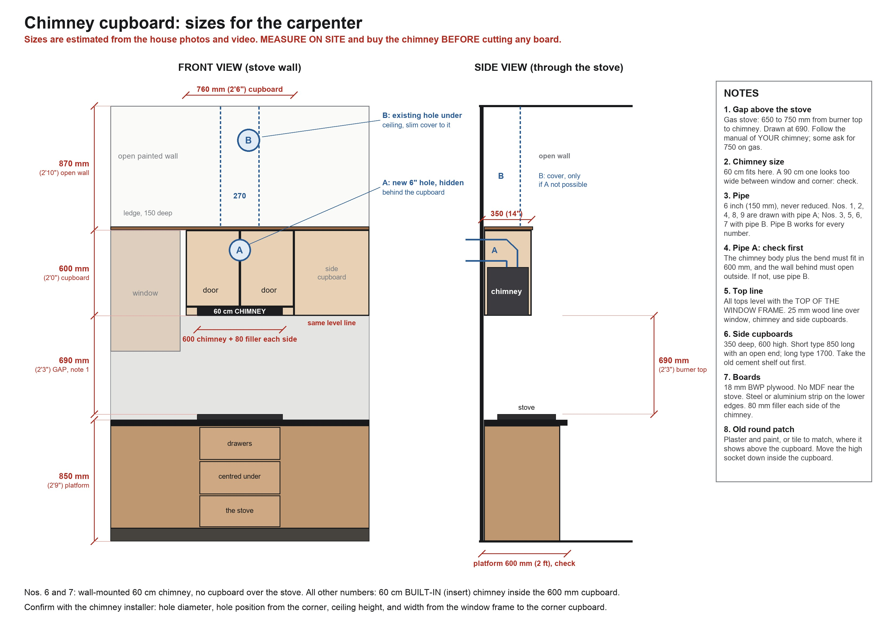

మన ఇల్లు
Our house, room by room
Interior designs drawn on photos of our own house. Watch the video first, then open each room and pick the number you like.
- designs in five places: hall, kitchen, chimney, pooja room and bedrooms.
- Tap any photo to see it large, see the room as it is today, and read the details.
- Press Choose this on one design in each room, then send the list to the family or the carpenter.
Four ready sets
Each set goes together from the hall to the bedrooms. The video shows the same sets and numbers, without the chimney.
వడ్రంగి కోసం
For the carpenter
The pictures show the look. Sizes are estimates from the video, so measure everything on site before cutting.
Before starting
- Ask for real laminate samples and look at them in each room, by day and at night.
- Do anti-termite treatment where wood touches the wall.
- Run wires for TV, lights and chimney before any panel is fixed.
- Keep all top lines level with each other.
Hall
- Remove the old cement shelf under the TV and finish the wall behind it.
- Low unit about 460 mm (1.5 ft) high, lifted off the floor. No. 7 is about 560 mm and goes down to the floor.
- The TV is drawn as 50 inch, bottom edge about 720 mm above the floor.
Chimney
- Buy the chimney first, then cut the boards to fit it.
- Bottom of the chimney 610 to 760 mm above the burner. The manual of your model decides.
- Cupboard 600 mm high, top level with the window. The wall above stays open.
- Pipe 6 inch, short, few bends. Nos. 1, 2, 4, 8 and 9 need a new hole behind the cupboard. If that is not possible, use a slim pipe cover up to the old hole, as in Nos. 3 and 5.
- Remove the old cement shelf on the side wall.
Bedrooms
- Two colours only, handles and bottom strip included.
- Loft line level with the top of today’s shelf.
- Doors 450 to 600 mm wide, at least 3 soft-close hinges on tall doors.
- The third bedroom was too blurred in the video to draw, but these designs fit it too.
Pooja room
- Sri Venkateswara Swamy in the centre, Ganesha on your left, Lakshmi or Padmavathi Ammavaru on your right.
- Raise the idols on a peetham, feet at chest height when you stand.
- Face east or north while praying. Keep the diya clear of wood.
- Follow your elders and priest first.
Kitchen
- The layout stays the same. Tiles, window and black granite stay as they are.
- No divider at the entrance. The opening from the hall stays fully open.
- Use BWP (boiling water proof) ply, and a strip light under the wall cupboards.
Chimney drawing with sizes (mm)

Our choice
Your choices are kept on this phone or computer only. Copy the list and send it to everyone.